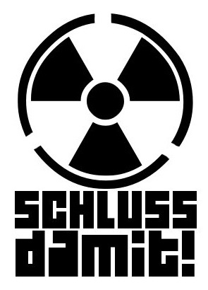

Die Proteste gegen die so genannte friedliche Nutzung der Atomenergie gehen weiter. Zum Beispiel heute um 18 Uhr vor der City-Galerie in Aschaffenburg. Und auch auf disk.blogsport.de, dem Schwesterprojekt von kommunal.tk, spielt das Thema eine große Rolle: Eberhard Stickler von der nhz (einer politischen Zeitschrift aus Hanau) hat einen dort veröffentlichten Text zur Verfügung gestellt. Und Mapec hat für seinen bereits auf dem eigenen Blog veröffentlichten Beitrag zum Thema Atomenergie ebenfalls die Neuveröffentlichung erlaubt. Darüber hinaus machen wir aufmerksam auf die Beiträge zu den regionalen Anti-Atom-Protesten am bayerischen Untermain.
Archiv der Kategorie 'Umwelt/Ökologie'
Das Anti-Atom-Bündnis Aschaffenburg ruft zum 27. Juni wieder zur Kundgebung auf gegen die Atompolitik der Regierung. Das Bündnis wird klarstellen, warum es den so genannten Atomkonsens als „Mogelpackung“ kritisiert. Es beteiligt sich weiter am bundesweiten Widerstand dagegen und für eine sofortige Stilllegung aller AKWs auf Kosten der Betreiber und eine Umstellung auf 50 Prozent erneuerbare Energien bis 2020.
Auch die SPD- und die Grünen-Parteiführungen werden sich voraussichtlich an diesem so genannten „Atomkonsens“ beteiligen. Offenbar war ihre Beteiligung an den Mahnwachen und Protesten nur „Stimmenfang“. Wie denken darüber ihre Mitglieder an der Basis??
Dem betrügerischen „Atomkonsens“ kann man nur ein „jetzt erst recht“ entgegensetzen.
Treffpunkt am 27. Juni ist wieder um 18 Uhr vor der City-Galerie im Schöntal.
(Zugesandte Meldung)
Die Redaktion KOMMUNAL.TK hat die Untershriftenaktion „Sofort volle Haftpflichtversicherung für deutsche Atomkraftwerke!“ unterzeichnet.
Die Petition an die Aschaffenburger Versorgungsbetriebe (kein Atomstrohm) des Anti-Atom-Bündnisses hat auch die Redaktion kommunal.tk unterzeichnet, siehe Screenshots hier:
Anti-Atom-Mahnwache in Miltenberg, 23.05.11:
Eine eigene Seite hat nun das Anti-Atom-Bündnis Aschaffenburg. Dort auch mehr zu den Demos am 28. Mai. Für den Montag, 23. Mai lädt das Bündnis wieder nach AB vor die City-Galerie ein – wiederum zur Mahnwache. Eine weitere gibt es in Miltenberg am Engelplatz, beides Beginn um 18 Uhr.
Überarbeitet wurde die Seite zu den Anti-Atom-Aktionen 2011.
Bei dieser Gelegenheit: Weiterhin finden Mahnwachen statt, in Aschaffenburg und im Kreis Miltenberg an unterschiedlichen Orten. Presse beachten oder mal bei Attac nachsehen.
Beteiligung vom bayerischen Untermain gab es auch beim Sternmarsch auf die AKWs Biblis am 25.04.11(PDF). Danke an Heinz Klein für das Dokument.
Wer z.B. über die Anti-Atom-Proteste in Aschaffenburg informiert werden will, der/die soll sich bitte in den Verteiler von Attac Aschaffenburg-Miltenberg eintragen (siehe linke Spalte auf der Titelseite der Homepage).
Bisher eingegangener regionaler Terminhinweis zu den Anti-AKW-Aktionen und zur Solidarität mit den Opfer der Katastrophe in Japan:
Montag, 11. April, 18 Uhr, Elsenfeld, Rathaus (Mahnwache bis ca. 18.30 Uhr)
Erneut beteiligten sich am Montag über 300 Menschen an der Mahnwache für die Opfer der Atomkatastrophe in Japan, sowie an der Kundgebung und Demonstration gegen die Atompolitik der Bundesregierung und der Energiekonzerne. Ein als Atomtod verkleideter Demonstrant mit einem Fass, das scheinbar mit radioaktiven Abfällen gefüllt war, verdeutlichte die unverantwortliche Nutzung der Atomenergie. Leitthema der Kundgebung war diesmal: Sofort stilllegen – geht denn das? Dazu wurden einige Beiträge am offenen Mikrofon gehalten, bevor es mit lauten Sprechchören „Aktiver Widerstand – keine AKWs im Land!“ auf die Straße ging. Wieder waren viele Kinder und Jugendliche dabei. Der Zug ging diesmal am Rathaus vorbei, in dem gerade der Stadtrat über einen Antrag beriet, dass die Stadtwerke keinen Strom mehr aus AKWs beziehen sollte. Dieser Forderung sollte Nachdruck verliehen werden. Auf der anschließenden Kundgebung trugen eindrucksvolle Lieder dazu bei, den Willen zu bestärken, den Widerstand solange weiterzuführen, bis alle AKWs stillgelegt sind.
(zugesandter Beitrag)
Sofortige Stilllegung aller AKWs – geht denn das? – Nächsten Kundgebung (mit anschließender Demo) am 4. April, diesmal schon um 17.30 Uhr, wieder vor der City-Galerie (Eingang Schöntal) in Aschaffenburg.
Zur Kundgebung am 28. März noch ein Nachtrag:
Ausstieg aus dem Atomstrombezug durch die AVG – Abschalten auch in Aschaffenburg!
(mehr…)
Der Beitrag zu den Anti-Atom-Aktionen wurde erweitert. Soweit uns bekannt ist, kam es in Aschaffenburg, Erlenbach, Kahl, Mömbris und Schimborn in den lezten Wochen zu diesbezüglichen Ativitäten.

Bild oben: http://blu.blogsport.de/
Am 21. März kam es erneut zu einer Mahnwache mit Demonstration in Aschaffenburg und zu einer Mahnwache in Erlenbach/Main. Wir bringen hier einen Zusammenfassung der Ereignisse in Aschaffenburg (PDF) und ein Infoblatt, das hierzu vom AK Infoladen verteilt wurde (PDF).
In dieser Zeit kam es auch zu verschiedenen themabezogenen Parolen an Hauswänden etc., wie Beispiele aus Miltenberg zeigen (externer Link).
(Obige Ergänzung wurde auch unter BEITRÄGE eingefügt.)
Weitere Termine der Anti-AKW-Bewegung:
Montag, 28. März, 18 Uhr, Aschaffenburg, diesmal vor der City-Galerie (Schöntal): Mahnwache, Kundgebung, Demonstration
Samstag, 26. März in München: Demonstration – Die Aschaffenburger Friedenstrommler rufen auf, gemeinsam mit dem Wochenendticket hinzufahren; Kosten: 29 Euro pro 5 Leute. Abfahrt Aschaffenburg Hbf: 07:17 Uhr, 12:22 Uhr München an
Ostermontag, 25. April: Großproteste an 13 Atomstandorten in Deutschland (anlässlich des 25. Jahrestages von Tschernobyl) – auch in Biblis
Gestern bei der zweiten Mahnwachen-Kundgebung mit Demonstration in Aschaffenburg gegen Atomkraft und für Solidarität mit den Opfern der Katastrophe in Japan: rund 500 Beteiligte!
Die Tonaufnahmen für kommunal.tk (geplant für radio_kommunal) sind leider von der technischen Qualität sehr schlecht geworden, daher kein Beitrag hierzu. Wer einige Zeilen beisteuern möchte: einfach die Kommentarfunktion benutzen. kommunal.tk lebt vom Mitmachen! Denn grundsätzlich veröffentlichen wir Dokumente und Berichte, die wir meist zugesandt bekommen, nur manchmal als Redaktion selbst erstellen.
Anläßlich des massiven Erdbebens in Japan, das nach der Zerstörung atomtechnischer Anlagen zu einer atomaren Katastrophe führte, fanden sich am 14.03.11 auch in Aschaffenburg weit über 200 Personen am Rondell vor der Buchandlung Diekmann zu einer kurzfristig angesetzten Mahnwache/Kundgebung ein. kommunal.tk hat dies dokumentiert.
Nächste Anti-Atom-Montagskundgebung in Aschaffenburg: 21. März, 18 Uhr vor Buchhandlung Diekmann
***
Bundesweite Aktionen geplant
Am Samstag, 26. März werden unter anderem in Berlin, Hamburg und Köln und einer der süddeutschen Großstädte bundesweite Großdemos stattfinden. Weiterhin sind für den 9. und den 25. April Aktionen überall im Bundesgebiet geplant.